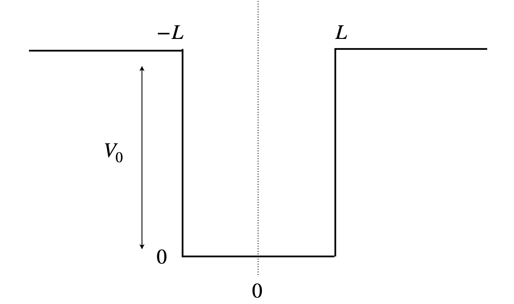

Questions 74 - 85
Contents
Questions 74 - 85#
Q74 Newton-Raphson#
One use of the Newton - Raphson formula is to calculate square, cube, or \(n^{th}\) roots of numbers.
(a) Calculate \(\sqrt[5]{5}\).
(b) Does this method produce all the roots to this equation?
Strategy: Rewrite the equation as \(x^5 = 5\) which is the function \(f(x) = x^5 - 5\) and use the algorithm in the script.
Exercise: Write a general Python procedure to find any real \(n^{\text{th}}\) real root of a number \(m\), e.g. \(\sqrt[n]{m}\).
Q75 Finding roots#
Look at Fig. 23 and find the roots of \(3 - 8x^2 + x^4 = 0\). Compare with the algebraic solutions calculated with Sympy.
Strategy: Look at the plot of the function and start close to one of the roots to make sure you get the right one. The function is even and replacing \(x\) by \(-x\) produces the same value; therefore, only two of the roots need to be calculated because the other two will be \(-1\) times these.
Q76 Blackbody radiation law#
Planck’s black-body radiation distribution law is derived as the product of the average energy of the (Bose - Einstein) photons of frequency \(\nu\), which is
and the density of these states, the number per unit frequency, or \(dn/d\nu = 8\pi\nu^2/c^3\). The energy/unit volume/unit frequency is
This energy density vs frequency can be used to determine the temperature of a hot body such as a lava flow, a furnace, the sun or another star. The distribution of energy density has a maximum value at a certain frequency at a given temperature.
When \(\rho(\nu)\) is at its maximum, the temperature and frequency have a fixed ratio. What is this ratio?
Strategy: Because the distribution \(\rho(\nu)\) is never negative, the maximum clearly occurs when \(\displaystyle d\rho(\nu )/d\nu = 0\) and this equation can be solved using the Newton - Raphson method. If temperature and frequency have a fixed ratio when the maximum condition is satisfied, the frequency and temperature should be present only as their ratio \(\nu/T\).
Q77 Blackbody radiation law & Newton-Raphson#
In problem 65 we found that the maximum of the Planck radiation distribution is given by
and made an approximation to find \(\lambda_{max}T\). Use the Newton - Raphson method to find an accurate value.
Q78 Protein forced unfolding#
In experiments to measure the unfolding of a protein by pulling on one end with the tip of an AFM, the following equation was used to calculate the force \(f\) at a given retraction speed \(v\) of the AFM tip,
This is a transcendental equation and cannot be solved algebraically. The constant \(x_u\) is a measure of the position of the transition state on the pathway to unfolding and \(h\) is the compliance of the cantilever and protein and is \(\displaystyle h=\frac{1}{k_s}+\frac{dx}{df}\). The compliance describes how easily the cantilever and the protein deform and is the inverse of the effective force constant.
The worm-like-chain model of force vs extension is usually used to describe the protein’s behaviour and at small extension \(x\) the force \(f\), is adequately described as \(\displaystyle f = \frac{3k_BT}{2p} x\). The constants are the persistence length \(p = 0.4\) nm, the unfolding rate constant at zero force \(k = 0.06\, s^{-1}\), and the cantilever force constant \(k_s = 40\,\mathrm{ pN \,nm^{-1}}\). At a pulling speed of \(v = 200\,\mathrm{ nm \,s^{-1}}\) the force is \(150\) pN. The Boltzmann constant is \(k_B\).
(a)Show that the compliance is a constant independent of force.
(b) Using the values given, calculate \(x_u\). Work in units of pN and nm.
Strategy: Use the Newton - Raphson method to calculate \(x_u\) since this is defined in an equation that has no algebraic solution.
Q79 Solution pH#
(a) Show that the concentration of \(\mathrm{H_3O^{+}}\) in a solution of \(c_A\,\mathrm{ mol \,dm^{-3}}\) of the acid HA and \(c_B\) of the salt NaA, is given by
where \(x \equiv [\mathrm{H_3O^+}]\) and the equilibrium constants are \(\displaystyle K_A = \frac{\mathrm{[H_3O^+][A^-]}}{\mathrm{[HA]}}\) and \(K_w = [\mathrm{H_3O^+][OH^-]}\).
(b) Calculate \(x\) and hence the pH of the solution if \(\mathrm{[HA]} = 0.2\,\mathrm{ mol \,dm^{-3}},\, \mathrm{[NaA]} = 0.01 \mathrm{ mol \,dm^{-3}}\), and \(K_A = 10^{-3}\).
Strategy: Write down all four equations for mass and charge balance and equilibrium constants. Use these to eliminate all species other than \(\mathrm{H_3O^+}\), because the equation you need only contains \(\mathrm{H_3O^+}\). In (b) use the Newton - Raphson method to solve for numerical values. Recall that, by definition, \(k_W = 10^{-14}\) at \(25^\mathrm{o}\) C.
Q80 pH#
What is the pH of an \(c = 0.1\) M solution of ammonia, given that \(\mathrm{p}K_A(\mathrm{NH_4^+}) = 9.25\) and \(\mathrm{p}K_W = 14\)?
Strategy: The species present must be protons, hydroxyl ions, ammonia, and ammonium ions. The equations are determined by mass and charge balance, and the equations defining the equilibrium between protons and \(\mathrm{OH^-}\) and \(\displaystyle \mathrm{NH_3/NH_4^+}\). Recall that if \(K\) is an equilibrium constant \(\mathrm{p}K = -\log_{10}(K)\) and similarly \(\mathrm {pH} = -\log_{10}([\mathrm{H^+}])\).
Q81 Energy in a well#
The energy levels of a particle in a box of finite height, or a well of finite depth, cannot be calculated algebraically because the energy is contained within a transcendental equation. The calculation proceeds by specifying three regions, the central one of length \(2L\) where the potential is zero, and two outer regions where the potential is \(V_0\). The Schroedinger equation is solved in each of these three regions and the wavefunction made continuous between them. The wavefunctions have even and odd parity, i.e. the odd wavefunctions have a centre of inversion where as the even ones are symmetrical about the centre of the potential. The reason for this is that the potential is symmetric, \(V(-x) = V(x)\). The wavefunction for the lowest potential is even the next odd and so on.
The equation containing the energy, for even parity wavefunctions, \(E\) can be written as \( \beta\tan(\beta)=\sqrt{\alpha^2-\beta^2}\) and for odd parity \(\beta/\tan(\beta)=-\sqrt{\alpha^2-\beta^2}\) where \(\beta^2 = 2m( V_0-E)L^2/\hbar^2\) and \(\alpha^2 = 2mV_0L^2/\hbar^2\).
If a quantum well is constructed with a length of \(1\) nm, calculate the energy levels, if \(m\) is the mass of an electron, and \(V_0\) the potential depth is
(a) \(-1230\,\mathrm{ cm^{-1}}\)
(b) \(12\) times that of (a).
(c) What is the meaning of multiple solutions to the equation?
In each case, comment on any spectra that could be produced by electronic transitions between levels and compare your answer with that of an infinitely deep well.
Strategy: Calculate a numerical value for \(\alpha\) and plot \(\tan(x)\) and \(\pm \sqrt{\alpha^2-x^2}\) vs \(x\) with \(x\) used as a variable, to find where the curves cross. The value of \(x\) where this occurs is equal to \(\beta\) defined above. Note that in the diagram the length is 2\(L\), i.e from \(\pm a\), thus \(L = 0.5\) nm. The crossing point where the function value is negative corresponds to the ‘odd’ symmetry states. The solution to the equation occurs when these curves cross.

figure 26. A finite depth well.
Q82 Soap bubble surface shape#
Adding a surfactant and also increasing the viscosity of water by adding one of many compounds such as glycerol lowers its surface tension and makes bubble formation easy. The surface produced has considerable elasticity; the intermolecular forces present must be of longer range than in pure water.
A soap bubble is formed between two wire hoops of radius 1 positioned at \(\pm x\), see Fig. 27. It turns out that there are two possible surfaces for a stable film, one with a wide and one with a narrow waist. The equation describing the line the bubble takes between opposite points on the rings placed at (-\(x\), 1) and (\(x\), 1), is \(y = r \cosh(x/r)\) where \(r\) is the radius of the bubble’s waist where \(x\) = 0. The surface produced is called a catenoid, and the lowest energy surface is a surface of minimum area. At a given size of the wire rings - in this question their radius is unity - there is a maximum value of \(x = x_0\) at which the bubble can exist between the rings. The corresponding waist is \(r_0\).
(a) By rearranging the catenoid equation, plot a graph of \(x\) vs. \(r\), and then using the Newton - Raphson method show that the maximum \(x_0\), which is just at the point where the film breaks, is \(0.6627\), and the corresponding value of \(r_0 = 0.5524\). Plot the graph and use Sympy to do the differentiation of \(\cosh^{-1}\) or look it up in Section 3.17.
(b) The surface area of a function \(y\) over the range \(a\) to \(b\) is calculated using the standard formula \(\displaystyle S = 4\pi\int_a^b y\sqrt{ 1 + y'^2} dx\) (see Section 8.2), where \(y'\) is the derivative. Work out the surface area for both values of \(r\) when \(x = 0.4\). Decide which surface has a large and which a small waist. (Look up the integration or use SymPy). Comment on their value relative to \(2\pi\). What do you think will happen if the bubble is initially made with the larger volume and smaller waist?
Strategy In (b) once the integration is performed a result in \(x\) and \(r\) is found. However, these are related by \(1 = r \cosh(x/r)\) (as \(y\) = 1) and so the Newton - Raphson has to be used again this time to find \(r\) at each \(x\) then the \(r\) calculated is used with the \(x\) to work out the area. There are two solutions so different starting values in the iteration are needed.
Figure 27. The soap film is maximally stretched between two rings of radius \(r = 1\), the surface of which is described as a catenoid has a minimal surface area and a waist radius of \(0.5524\). The rings are positioned at \(x_0 = \pm 0.6627\). The curve \(y = r\cosh(x/r)\) is also shown.
Q83 Halley’s method#
Halley’s method is an alternative to Newton - Raphson and supposedly has the advantage of converging faster than this method and of tripling in accuracy at each iteration. The recursion equation contains both the first \(f'\) and second derivatives \(f''\) and is
(a) Calculate a recursion formula for the roots of the polynomial \(f(x) = x^m - c\) where \(m\) and \(c\) are constants.
(b) Use this method to find \(\displaystyle 79^{1/9}\) and \(\displaystyle \left(\frac{11}{9971} \right)^{30/91}\) to eight decimal places.
Strategy: To calculate \(79^{1/9}\) let \(c = 79\) and \(m = 9\),and find the root when \(x^m - c = 0\).
Q84 Planets motion#
The planets move in elliptical orbits around the sun. An ellipse has semi-major and semi-minor axes that are the maximum and minimum radii respectively, measured from the centre of the ellipse to its circumference. If \(a\) is the semi-major axis, then the semi-minor axis is \(b = \epsilon a\) where \(\epsilon\) is the eccentricity of the orbit; \(0 \lt \epsilon \le 1\). For the earth \(\epsilon = 0.01671\), for Mercury \(0.2056\), Pluto \(0.2288\) and Halley’s comet \(0.9761\). (An eccentricity of \(\ge 1\) produces a hyperbolic path, such as followed by the extra-solar system object ʻOumuamua with a value \(1.1995\)).
An important problem in celestial mechanics is to know where a planet or its moon was at a given time in the past or will be in the future, when its current position is known. Kepler solved this problem with the equation
where \(m\) is called the mean anomaly, \(\epsilon\) the eccentricity, and \(x\) the eccentric anomaly. The word anomaly as used here is a misnomer and is used nowadays out of historical precedence; ‘anomalies’ are angles measured in radians, and shown in Fig. 28. The mean anomaly is \(\displaystyle m = \frac{2\pi}{T} (t - t_0)\) radians where \(T\) is the period of the orbit, approximately \(365\) days for the earth, \(t\) the present number of the day in the year and \(t_0\) the number of the day at which the body is closest to the centre of its orbit. This is generally called the periapse but is called the perihelion for the earth - sun system, and occurs on either \(4^{th}\) or \(5^{th}\) of January each year. The eccentric anomaly \(x\) is the angle from the centre measuring the position of the planet or satellite moon.
In polar coordinates the position of the earth is \((a \cos(x),\; b \sin(x))\) where \(a = 149.6\cdot 10^6\) km and is the distance of the earth from the sun. The true anomaly is the angle \(\xi\) (xi) and is the angle defined by \(P-f-E\), see Fig. 28, where the periapse is \(p\), the foci \(f\), and the planet \(E\). The true anomaly \(xi\) and the eccentric anomaly \(x\) are related as
As Kepler’s equation is transcendental, it has either to be solved numerically or approximated algebraically. Halley’s method uses the recursion equation given in the previous question (Q83).
Use this method to calculate the position of the earth and its distance from the sun in 2019 at the vernal and autumnal equinoxes, 20 March and 23 September, at the summer and winter solstices, 21 June and 22 December, and at aphelion, 3 July. Perihelion is on 3 January, (See Richards 2002, p. 130 and references therein for further discussion and derivation of Halley’s method).
Strategy: The semi-minor axis is given by \(b/a\sqrt{1-\epsilon^2}\) and the focus of the ellipse at \(\sqrt{a^2-b^2}\) along the axis O-P as shown in the figure.
Figure 28. Defining the ellipse (semi-major/minor- axes =( \(a,\; b\) ) ) and eccentricity \(\epsilon\) and eccentric anomaly \(x\). The true anomaly is angle \(\xi\)
Q85 Full width of pulse.#
The Fourier transform of a square pulse has the form \(\displaystyle g(\omega) = \frac{(1 - e^{- i\omega \tau})}{i\omega}\) where \(\tau\) is the pulse’s duration.
(a) Calculate the half-width at half maximum (hwhm) of the real part of the transform which is \(\displaystyle f(\omega)\equiv Re[g(\omega)]=\frac{\tau}{\sqrt{2\pi}}\frac{\sin(\omega \tau )}{\omega \tau}\)
(b) Evaluate the hwhm when \(\tau = 3\).
Strategy: (a) Calculate the function at \(\omega = 0\) using l’Hopital’s rule, then calculate \(f(0) = 1/2\) and obtain an equation for \(\omega\). (b) The resulting transcendental equation has to be solved numerically. Plot a graph to convince yourself of the answer.